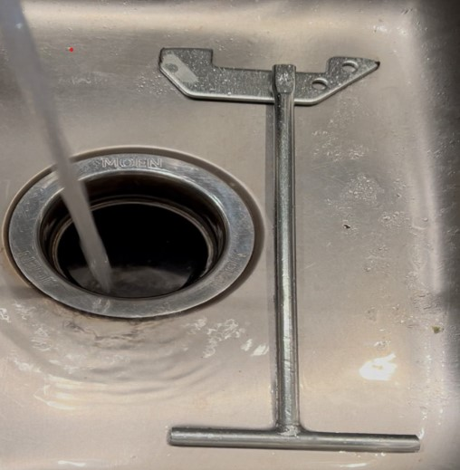

Many kitchen repairs are easy. Replacing worn-out faucet washers or aerators can resolve drips and low pressure. Tightening loose pipe connections under the sink with adjustable wrenches helps prevent leaks. Replacing the cartridge is straightforward. Garbage disposal jams can be cleared using reset buttons or hex wrenches. I had the experience of a jam in my kitchen sink. I resolved it by buying the unjamming wrench from Amazon. The wrench is shown in my photograph below.
